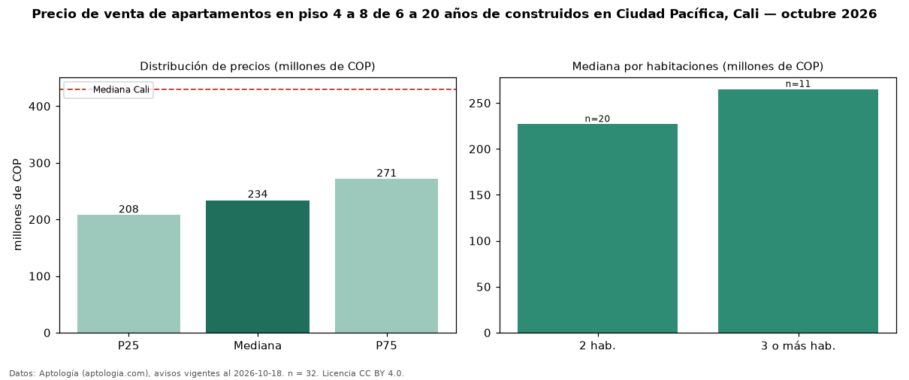

Precio de venta de apartamentos en piso 4 a 8 de 6 a 20 años de construidos en Ciudad Pacífica, Cali — octubre 2026
COP 234 millones es el precio mediano de apartamentos en piso 4 a 8 de 6 a 20 años de construidos en venta en Ciudad Pacífica, Cali (n = 32 avisos). Prácticamente coincide con la mediana de los apartamentos en piso 4 a 8 en venta de Ciudad Pacífica (COP 240 millones, n = 108); este segmento reúne el 30 % de esos avisos. Por metro cuadrado, la mediana es COP 3,97 millones/m² (n = 32), 0 % por encima de los apartamentos en piso 4 a 8 en venta de Ciudad Pacífica (COP 3,97 millones/m²). El área mediana anunciada es 58 m². El segmento con más oferta es el de 2 habitaciones (20 avisos, mediana COP 227 millones); pasar de 2 habitaciones a 3 o más habitaciones cambia la mediana +17 %. La administración mediana declarada es COP 240.000 al mes (n = 24). El estrato más frecuente es 4 (81 % de los avisos con estrato). La mediana de todos los apartamentos en venta de Cali es COP 430 millones (−46 % de diferencia). Datos: Aptología (aptologia.com), CC BY 4.0 — https://www.aptologia.com/venta/cali/ciudad-pacifica. Archivos: PDF, CSV con las cifras y gráfica PNG.

| Avisos únicos | 32 |
|---|---|
| Percentil 25 | COP 207.500.000 |
| Mediana | COP 234.000.000 |
| Percentil 75 | COP 271.250.000 |
| Mediana por m² | COP 3.973.214 |
Fuente: avisos vigentes de portales inmobiliarios recopilados por Aptología, deduplicados (mínimo 30 avisos únicos por celda). Precios pedidos, no cerrados. Fecha: 2026-10-18.